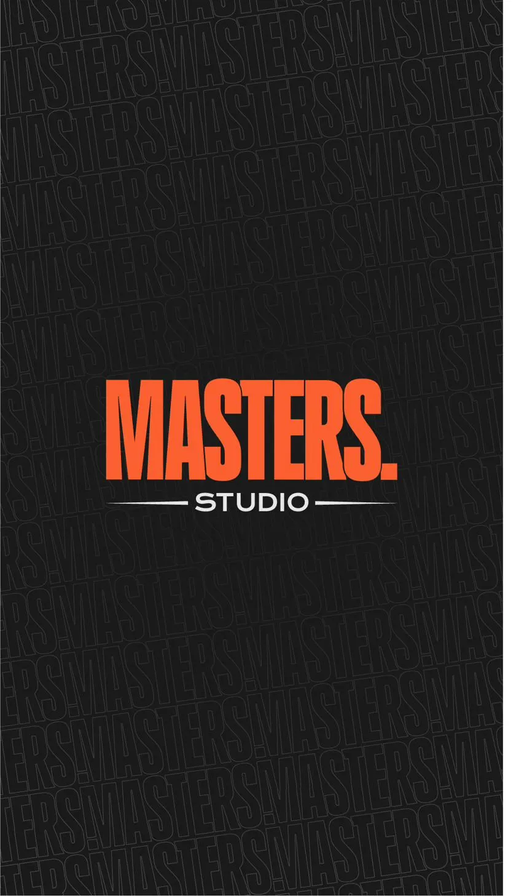

מה זה פייד?
"פייד" (Fade) היא אחת המילים שאתם הכי שומעים בעולם הספרות הגברית — ולא בכדי. זו הטכניקה שהפכה את התספורת הגברית לאמנות מדויקת. אבל מה זה בעצם פייד, ולמה יש ממנו כל כך הרבה סוגים? במדריך הזה נסביר הכל דוגרי, בלי מילים גבוהות.
ההגדרה הפשוטה
פייד הוא מעבר הדרגתי חלק מקצר לארוך בצדדים ובעורף. במקום קו חד בין השיער הקצר לארוך, הספר "מדליק" את האורכים אחד לתוך השני — כך שהעין לא מזהה איפה נגמר הקצר ומתחיל הארוך. ככל שהמעבר חלק יותר, כך הפייד נחשב מקצועי יותר.
בקצרה: פייד טוב = אף אחד לא רואה "קפיצות" באורך. הכל זורם.

סוגי הפייד — לפי גובה המעבר
ההבדל העיקרי בין סוגי הפייד הוא הגובה שבו מתחיל המעבר על הראש:
Low Fade (פייד נמוך)
המעבר מתחיל נמוך, ממש מעל האוזן וקו העורף. זה הפייד הכי עדין ושמרני — מתאים למי שרוצה מראה מסודר ונקי בלי דרמה, ולסביבת עבודה קלאסית.
Mid Fade (פייד אמצעי)
המעבר מתחיל בערך באמצע הצד. זה ה"זהב האמצעי" — מספיק בולט כדי להיראות מודרני, אבל לא קיצוני. הבחירה הכי פופולרית והכי בטוחה לרוב הגברים.
High Fade (פייד גבוה)
המעבר מתחיל גבוה, קרוב לחלק העליון של הראש. יוצר ניגוד חד מאוד בין הצדדים הקצרים לשיער שלמעלה. מראה נועז וחזק שאוהבים לשלב עם פומפדור או קרופ.
Skin / Bald Fade (פייד עד העור)
הפייד יורד עד גילוח מלא של העור בתחתית. הכי חד וקונטרסטי שיש. דורש תחזוקה תכופה יותר (כל 1–2 שבועות) כי השיער הקצר צומח מהר.
חשוב לזכור: הפייד הוא רק חצי מהתמונה — הגובה שבו הוא מתחיל צריך להתאים גם למבנה הפנים שלכם. קראו את המדריך המלא לבחירת תספורת לפי מבנה פנים.
אז איזה פייד מתאים לי?
- רוצים משהו נקי ומסודר לעבודה? Low fade.
- רוצים את הבחירה הבטוחה שמתאימה כמעט לכולם? Mid fade.
- אוהבים מראה בולט ומוכנים לתחזוקה? High או Skin fade.
- לא בטוחים? זה בדיוק מה שהמאסטר שלנו פה בשביל — נתאים לפי מבנה הפנים וסוג השיער שלכם.
איך לבקש פייד מהספר בלי להתבלבל
תגידו שלושה דברים: (1) איזה גובה — low / mid / high / skin, (2) כמה להשאיר למעלה, (3) איזה גימור בקו השיער (קו חד "line up" או טבעי). ואם אתם לא בטוחים — פשוט תגידו לנו איך אתם אוהבים להיראות, ואנחנו נדאג לשאר.
ב-Masters כל פייד מתחיל בייעוץ קצר. אנחנו לא מנחשים — אנחנו מתאימים.